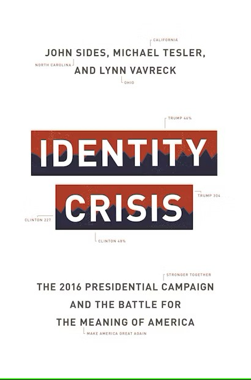

Introduction
Introduction to Graduate Research
August 10, 2025
Outline of the Class
- Introductions.
- What is Quantitative Methods?
- Understanding Variables
- 10 Minute Break
- Introduction to
R
- Norms and Expectations
Who are we?
.jpg)
Patrick Buhr
Fifth-year Ph.D. Candidate studying U.S. Congress and presidency.
Mason Auten
Third-year Ph.D. Student studying historical state formation.
Who are you?
- Name
- School
- What topics/problems in political science are you interested in?
- If you could have dinner with any political leader (broadly defined, dead or alive) who would it be and why?
Why are you here?
You are interested in asking and answering questions about politics.
- Why do some people turn out to vote at higher rates than others?
- Why do some countries go to war while other countries resolve their conflicts peacefully?
- Why is the military a trusted institution in some countries, but feared in others?
- Why are some Members of Congress effective at enacting their ideas into law, while others are not?
Quantitative methods can answer each of these questions.
What is Quantitative Methods?
What is quantitative analysis?
Foundation of quantitative analysis:
- Based on numerical measurements (i.e., what is the quantity?)
- Used to develop and test theories that are generalizable.
- Creates measurements and analyses that are replicable.
- Quantitative analysis is one of three dominant paradigms in political science research; the other two are qualitative analysis and formal modeling.
- No single method is inherently superior, but quantitative methods are currently dominant in political science and offer the best opportunities for academic and private sector employment.
Why use quantitative analysis?
Description: Summarizing and understanding the characteristics of the data we have.
Inference: Making generalizations about a population based on sample data.
Prediction: Forecasting future events or behaviors based on existing data patterns.
Quantifying Concepts
Operationalizing Concepts
For quantitative analysis, we need to operationalize a concept into a numerical representation.
Occasionally a variable will lend itself well to quantification: income, voter turnout, number of bills introduced by a Member of Congress, hours of cable television a person watches.
Other times, quantification is easy but there is dispute over which is the best measure: GDP, GDP per Capita, Human Development Index
Example: Political Ideology
“Likert” scale, 7-point:
1. Very Liberal
2. Liberal
3. Somewhat Liberal
4. Moderate/Middle of the Road
5. Somewhat Conservative
6. Conservative
7. Very Conservative
Measures both direction (Liberal vs. Conservative) as well as intensity (Somewhat vs. Very).
Example: Racial Resentment
Can we use the same Likert scale?
On a scale of 1 to 5, with 1 being “strongly disagree” and 5 being “strong agree” how much do you agree with the following statements:
- “Irish, Italians, Jewish and many other minorities overcame prejudice and worked their way up. Blacks should do the same without any special favors.”
- “Generations of slavery and discrimination have created conditions that make it difficult for blacks to work their way out of the lower class.”
- “Irish, Italians, Jewish and many other minorities overcame prejudice and worked their way up. Blacks should do the same without any special favors.”
Scores are averaged to create a composite racial resentment index.
Why does operationalization matter?

Variables
Research Questions
Every quantitative paper in political science answers some variation of the following question:
How (or why) does \(x\) affect \(y\)?
- \(x\) is the “independent variable” which causes some change.
- \(y\) is the “dependent variable” which is affected by (i.e. depends on) the change caused by \(x\).
Every causal statement has the counterfactual of “if \(x\) had been different, then \(y\) would have been different too.”
What is a Variable?
We study units.
- Units can be thought of as individuals.
- Examples of units: people, countries, congressional committees, states, cities, etc.
Units have attributes.
- Characteristics of a unit that distinguish it from other units.
Variables are logical groupings of mutually exclusive attributes.
- Each variable has a score—a numerical value corresponding to the attribute for that specific unit.
- Examples: GDP, Population, GDP per capita
Dataframes
Dataframes are a structured way to organize variables.
- Rows represent units (e.g., individuals, countries).
- Columns represent variables (e.g., age, income, ideology).
- Cells contain scores (the values of variables for each unit).
In this course, we will only use dataframes. The major alternative to dataframes is lists, which are used primarily in engineering and computer science.
Levels of Measurement
- Categorical: Data is in categories, but categories cannot be logically ordered (e.g. political party).
- Ordinal: Data is in categories, which can be logically ordered but without consistent intervals (e.g. level of education).
- Continuous: Numerical data with consistent intervals between values, and either a true zero point (ratio variables, e.g. height) no true zero point (interval variables, e.g. temperature).
- Binary: Data which can take one of two possible values (e.g. did or did not vote).
Categorical Variables
Definition:
Nominal variables classify data into distinct categories without any inherent order or ranking.
- Categories are mutually exclusive.
- No logical order among categories.
Examples:
- Political Party Affiliation: Democrat, Republican, Independent, Other
- Country of Origin: United States, Canada, Mexico
- Race: Black, White, AAPI, Latino/a
Ordinal Variables
Definition:
Ordinal variables have categories that can be ranked in a meaningful order, but the differences between categories are not necessarily equal.
- Data has a clear ranking order.
- Differences between ranks are not necessarily equal.
Examples:
- Political Ideology: Very Liberal, Liberal, Moderate, Conservative, Very Conservative
- Education Level: No High School, High School, Some College, Bachelor’s Degree, Graduate Degree
- Presidential Approval Ratings: Strongly Approve, Approve, Neutral, Disapprove, Strongly Disapprove
Continuous Variables
Definition:
Continuous (sometimes called numeric) variables have ordered categories with equal intervals between values.
- Data is ordered with meaningful differences.
- Zero may or may not indicate an absence of the measured attribute.
Examples:
- Temperature: The difference between 40°F and 50°F is the same as between 50°F and 60°F.
- SAT Scores: The difference between 1100 and 1200 is the same as between 1200 and 1300.
- Age: The difference between 30 years old and 40 years old is the same as between 40 years old and 50 years old.
Binary Variables
Definition:
Binary (sometimes called Boolean) variables are either 1 or 0 (or TRUE/FALSE)
- Some variables are binary by definition.
- Often, we binarize a variable for analytic convenience.
Examples:
- Voter turnout: Either a person voted (1) or did not vote (0)
- Party: transform categorical into either a person is a Democrat (1) or not (0) which includes all others.
- Income: transform continuous into either a person makes ≥ $100,000 (1) or not (0).
Examples
What type of variable is the following (categorical, ordinal, continuous, binary):
Religious affiliation (e.g. Catholic, Protestant, Muslim, Jewish, None).
Categorical, because categories are not ranked.
Unemployment rate in a Member of Congress’s district (percentage of constituents who are unemployed)
Continuous, because distance between numbers is consistent.
Political interest (e.g. not interested, slightly interested, fairly interested, very interested)
Ordinal, because categories have a ranking
Variable Choices
Often, we can represent concepts in different ways.
What would be the best way to operationalize education?
- Categorical: No High School, High School, Some College, Bachelor’s Degree, Graduate Degree.
- Continuous: Years of education.
- Binary: Whether or not an individual attended college.
- Best choice is based on your theory and research design.